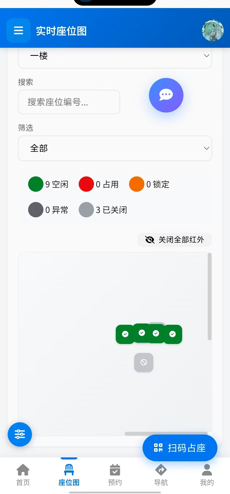
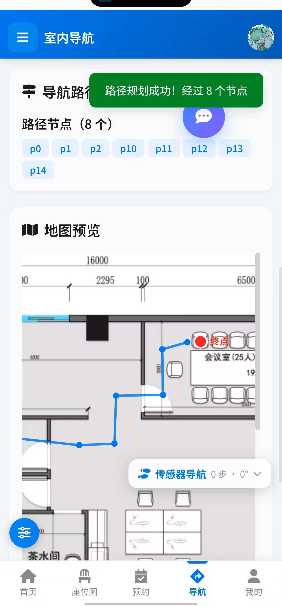
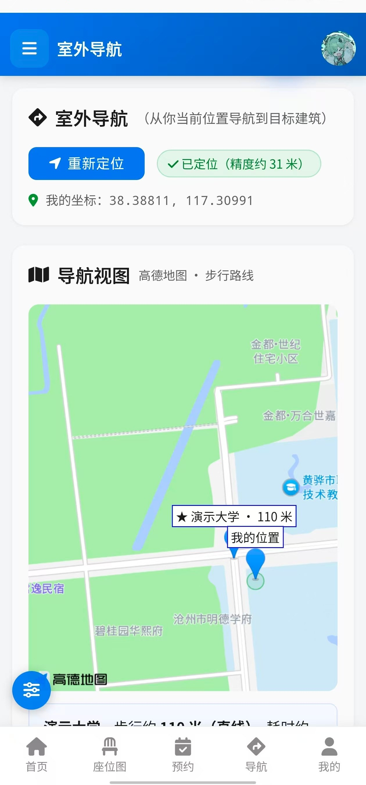
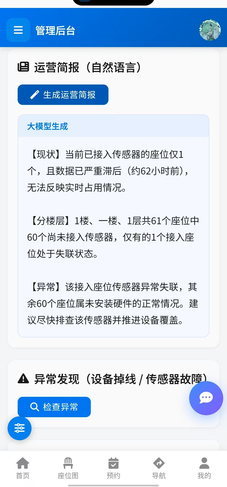

| 所在赛区： | 河北赛区 |
| 所在学校： | 沧州交通学院 |
| 团队名称： | 苗苗 |
| 团队成员： | 吴嘉森、李冠桦 |
| 提交日期： | 2026 年 10 月 |
参赛作品名称：智座（智能选座与导航一体化系统）（下称该作品）
本小组全体成员，就该作品声明如下：
1、该作品（含提交参赛的 App 应用、相关文档和介绍视频）是本小组成员的原创研究成果，不存在侵犯任何他人知识产权、涉及泄密或违反中华人民共和国法律法规的情形，且未在 2026 年 10 月 10 日前公开发布。
2、我们确认：该作品知识产权归本小组成员所有，且签署本声明的人员能够代表全体小组成员的意愿。
3、我们承诺：将仅由本小组成员参加大赛答辩。
4、大赛举办方为宣传大赛、推广参赛作品，以及为未来各届大赛的参赛选手提供参考等非盈利目的，可能需要以下列形式使用参赛作品，就此我们确认：
（1）☑ 同意 □ 不同意：将参赛作品的相关文档结集出版（含公开发行）；
（2）☑ 同意 □ 不同意：在相关网站（包括大赛官网及含优酷等第三方视频平台网站）上传和播放介绍视频或幻灯片；
（3）☑ 同意 □ 不同意：在大赛官方网站提供 APP 应用免费下载；
（4）作出上述许可，同样不违反本声明第 1 款的要求。
作品小组全体成员（签名）：
日期：2026 年 月 日
「智座」是一套面向公共学习空间的智能选座与导航一体化系统，由「物联网感知层 + 云端决策层 + 移动应用层」三层构成：用低成本的嵌入式传感器实时感知每一个座位是否有人，由云端完成座位调度、预约与鉴权，再通过 Android 移动应用把「哪里有空位」一路导航到「你坐下的那个位置」。
项目的起点来自团队在图书馆的真实体验。高校图书馆、自习室的座位供需矛盾长期存在：一方面，读者在馆内绕行数圈找不到空位，时间大量消耗在「找」上；另一方面，「占座不来」造成大量隐性浪费。而现有的解决方案存在两个共同缺口 ——
缺口一：只告诉你「有空位」，不告诉你「怎么走过去」。市面上的座位查询系统大多止步于一张状态图。而 GPS 在室内失效，读者拿到「3 楼 A 区有空位」这条信息后，仍然要在书架与隔断之间自行摸索，最后一米的体验是断的。
缺口二：室内定位方案成本过高。要做到室内定位，常规做法是部署蓝牙信标（iBeacon）或 UWB 基站，需要逐个安装、供电、维护与坐标标定，对学校而言是一笔持续投入，很难在普通教室、自习室规模化落地。
针对这两个缺口，本项目完成了三项关键工作：① 用 ESP32 + 超声波传感器做出单节点成本极低的占用感知终端，并实测出「3.3V 单电源直连、免分压电阻」的接法，把部署门槛进一步压低；② 提出并实现了零信标室内定位方案 —— 以座位上已有的二维码作为定位锚点，配合手机自带的加速度计/陀螺仪做步态惯性推算，在不增加任何硬件成本的前提下提供连续位置；③ 把感知、预约、路径规划、移动端导航串成闭环，并引入大语言模型把原始传感数据转译为普通人能直接照做的建议。
系统已在真实环境中跑通全链路：ESP32 节点通过公网向云端上报占位状态，Android 应用可在任意网络下访问 https://zhinengzuo.site 完成注册、选座、预约、室内导航与室外导航，管理员可通过后台管理多校区场所、平面图、路网与传感设备。
系统所依赖的技术均为成熟且可验证的方案，且团队已完成全链路的真机实测，不存在「纸面可行、落地卡住」的风险。
感知层：ESP32（ESP32-D0WD 双核 240MHz，集成 2.4GHz Wi-Fi）搭配 HC-SR04 超声波测距模块，成本约 20 元/节点。团队实测确认：将模块 VCC 接 ESP32 的 3V3 引脚、TRIG 接 GPIO16、ECHO 接 GPIO27 直连即可稳定出数，无需分压电阻；50cm 以内的测距精度足以判断座位是否有人。节点开机后自动连接 Wi-Fi、向云端注册并周期性拉取配置（绑定的座位号、判定阈值、上报间隔），全程免现场烧录。
云端层：Flask 3.1 + Flask-SQLAlchemy 3.1 + MySQL，通过 gunicorn（eventlet worker）承载，由 nginx 反向代理并绑定 HTTPS 域名，已稳定运行于云服务器，具备公网联通性（满足大赛第 5 条要求）。实时座位状态通过 WebSocket（Flask-SocketIO 5.5 + Socket.IO 4.7）推送到客户端，无需轮询。
移动层：采用 Capacitor 7 将 Web 应用封装为原生 Android 应用，既保留一套代码同时服务浏览器与 App，又能调用扫码、语音识别、本地通知、地理定位等原生能力。室内导航采用「静态平面图 + 路网图 + A* 启发式寻路」，路径节点可吸附，支持跨楼层拼接；室外导航接入高德地图 JS API 2.0，并在未配置地图密钥时自动降级为自绘的「相对方位图」。
智能层：接入 DeepSeek 大语言模型（模型 deepseek-chat，接口 api.deepseek.com/v1），用于把多源传感数据压缩成一句话结论、生成座位推荐理由。模型层做成可切换适配器，可在管理后台现场更换服务商与模型，也可切换为本地部署的模型服务。
用户侧的操作路径被压缩到极短：微信或浏览器打开链接即可使用，无需安装；安装 App 后，长按桌面图标可直接进入「找空座 / 扫码占座 / 我的预约 / 语音选座」四个快捷入口。日常最高频的两件事各只需一步 —— 想看空位，首页即显示实时状态；想坐下，扫桌上的二维码即可完成签到或占座。语音入口允许用户说一句话（如「找个空座」）由系统自动挑出座位并跳转导航，全程不需要手动检索。
管理侧同样按「可视化配置优先」设计：场所、楼层、平面图、路网、座位、传感设备、终端大屏的默认显示位置、AI 服务商与密钥，全部可在管理后台点击完成，不需要修改配置文件或重启服务。
本方案最突出的优势是部署成本极低。以一间 100 座的自习室为例：若采用蓝牙信标做室内定位，通常每 5–8 米需布设一个信标，100 座空间约需 15–20 个信标，加上电池更换与人工标定，一次性投入数千元且存在持续维护成本；而本方案室内定位不依赖任何额外硬件，只用座位上已有的二维码与手机自带传感器，这部分成本为零。
需要新增硬件的只有占用感知节点：单节点（ESP32 + HC-SR04 + 外壳供电）成本约 20–30 元，且由于采用 3.3V 直连免分压方案，接线与故障点更少。软件全部基于开源技术栈，云端可运行在入门级云服务器上，年运营成本在数百元量级。
从收益侧看，系统能直接减少读者寻找座位的时间，并可通过预约与签到机制抑制「占座不来」，提高单位座位的实际使用效率，投入产出比清晰。
核心用户：在校学生（图书馆、自习室的主要使用者）。他们对空位信息的需求最强烈、使用频率最高。按使用场景可细分为三类：临时找座的学生，最关心「现在哪里有座、怎么最快走过去」，主要使用实时座位图、语音找座与室内导航；需要长时间固定学习的学生，更依赖预约与签到功能，希望提前锁定座位并在到馆后快速核验；对安静程度、靠窗与否有偏好的学生，则更看重按类型筛选座位与 AI 推荐理由。
次要用户：场馆管理人员。他们关注的是整体使用率、异常设备与座位纠纷处理，主要使用管理后台的场所与座位管理、传感设备监控、平面图与路网配置、AI 运营中心以及智能终端大屏。
延伸用户：校内其他公共空间。系统在数据模型上以「学校 → 场所 → 楼层 → 座位」分层，并支持多校隔离与学校管理员分级授权，同一套系统可直接复用到食堂、报告厅、研讨间、候车区等任何「座位资源紧张且需要引导」的公共空间。
| 功能模块 | 功能描述 |
|---|---|
| 实时座位图 | 以平面图为底图叠加座位，按空闲／已占用／已预约／传感器异常分色显示，通过 WebSocket 实时刷新，无需手动刷新页面。 |
| 座位预约与签到 | 用户选定座位与时长后提交预约，生成签到二维码；到馆扫码或点击签到完成核验，超时未签到自动释放，抑制「占座不来」。 |
| 室内导航 | 基于平面图与路网图做 A* 路径规划，支持手动选点、扫码定位、入口定位三种起点方式与座位／坐标两种终点方式，支持跨楼层路径拼接。 |
| 传感器导航（PDR） | 以座位二维码为锚点，用手机加速度计做步态检测、陀螺仪／磁力计做朝向估计，实时给出步数、推算距离与朝向，为「最后一米」提供连续位置参考。 |
| 室外导航 | 接入高德地图绘制步行路线，展示目标建筑标记与直线距离；无地图密钥时自动切换为以用户位置为圆心的相对方位图，完全离线可用。 |
| 扫码占座 | 调用原生相机扫描座位二维码，直接完成占座或签到，免除手动检索与输入。 |
| 语音选座 | 调用系统语音识别获取一句话，本地解析意图（找座／预约／导航／取消／问答），「找空座」会自动挑选空闲座位并跳转导航。 |
| 实时提醒 | 通过本地通知推送预约到期提醒与座位状态变化，不清后台也能收到。 |
| 地理围栏 | 基于建筑经纬度判断用户是否进入／离开场馆范围，触发相应提示。 |
| 离线缓存 | 接口响应写入本机缓存，断网时仍可查看上一次的座位状态。 |
| AI 智能体 | 全站可用的 AI 助手浮窗；把多源传感数据转译为「一句话结论」；为推荐座位生成可解释的理由；智能终端大屏定时生成场馆运行概述。 |
| 智能终端大屏 | 面向场馆入口的只读展示页，支持按管理员配置的默认场所与楼层打开，实时显示座位状态与 AI 概述，可切换楼层。 |
| 管理后台 | 场所与楼层管理、平面图与路网上传配置、座位批量管理与二维码生成、传感设备绑定与调试面板、学生批量导入、学校与权限管理、AI 运营中心、系统设置。 |
| 多校与权限 | 支持学生／普通用户／学校管理员／管理员四种身份注册，学校管理员只能管理本校资源，超级管理员全局管理。 |
运行平台：Android 移动终端（另提供浏览器版本） | 屏幕分辨率：适配 360×640 及以上 | 已测机型：iQOO Neo9S Pro（Android 16）

图 1 首页界面：顶部显示当前应用名称与身份入口，主体为场馆横幅、「你在哪里」检索框与「全部场所」列表（含每个场所的座位数与空闲数），底部为五个主 Tab：首页、座位图、预约、导航、我的。右下角为 AI 助手浮窗，左下角为设置入口。应用外壳（顶栏、底部 Tab、侧边抽屉）只在 App 内生效，浏览器访问时保持原有网页版布局；导航项按角色动态生成，普通学生看不到「管理」入口。
图 2 实时座位图：以管理员上传的平面图为底图，按坐标叠加座位方块：绿色为空闲、红色为已占用、橙色为已预约、深灰为异常、浅灰带 ⊘ 为已关闭。顶部为楼层选择、搜索框与状态筛选，其后是状态统计（图示为 9 空闲 / 0 占用 / 0 锁定 / 0 异常 / 3 已关闭），右下角「扫码占座」按钮可直接调用相机扫座位二维码。已关闭的座位默认不出现在图面上，需要时把筛选切到「已关闭」单独查看。


图 3 室内导航：上半部分设置起点与终点，支持手动选点、扫码定位与入口定位；规划成功后显示路径节点序列并在地图预览上以蓝色折线绘制路径，红色圆点标注终点（图示为「演示大学 1 层」，共经过 8 个节点）。右下角为可折叠的「传感器导航」面板，显示步数、推算距离与朝向；扫码锚定后，按步态推算出的当前位置会以橙色圆点叠加在平面图上，并用虚线标出与锚点的位移关系。
图 4 室外导航：上方显示定位状态（图示精度约 31 米）与当前坐标；下方以高德地图为底图展示「我的位置」与目标建筑及直线距离。地图数据来源为高德地图，页面底部自带版权与审图号信息。未配置地图密钥、或步行路线服务不可用时，系统自动退化为自绘的相对方位图 —— 以用户为圆心、各目标建筑按真实方位角与真实距离摆放，外圈标注距离刻度，完全离线可用。
管理后台：场所管理页可新增场所、设置地理位置（经纬度）、查看与编辑场所信息；平面图与路网配置页用于上传平面图、添加座位、绘制或由 CAD 图自动生成路网，是室内导航的数据来源（见后文图 5）。
① 感知层实现。基于 ESP32 + Arduino 框架编写固件（PlatformIO 构建，主程序 467 行）。节点启动后进入配置流程：连接 2.4GHz Wi-Fi → 向云端注册设备 → 周期性拉取运行配置（绑定座位标签、超声判定阈值、上报间隔）→ 循环测距并按阈值判定座位是否有人 → 通过 HTTP JSON 上报。为避免 Wi-Fi 断线导致长时间失联，固件增加了服务器不可达自动重连与配置自动恢复逻辑。
② 云端实现。后端为 Flask 应用（app.py 约 4,556 行），按「模型层—工具层—接口层」组织：models 定义学校、建筑、楼层、座位、预约、传感设备等数据模型；utils 封装导航（路网加载、A* 寻路、跨层拼接）、推荐引擎、行为跟踪、AI 服务、图像预处理等能力；接口层对外提供 REST API 与 WebSocket 事件。系统采用「运行时配置」设计，管理员在后台修改的参数（AI 服务商与密钥、传感阈值、终端显示位置、离线判定时长等）即时生效，无需重启进程。
③ 移动端实现。前端为 Vue 3 单页应用（原生 JS，无构建步骤），通过 Capacitor 7 封装为 Android 应用。原生能力统一封装在 native-bridge.js 中，向页面暴露 window.Native 对象（扫码、语音识别、本地通知、地理定位、本地存储、震动），并提供「浏览器环境自动降级」策略 —— 同一套页面在浏览器里打开不会报错，只是原生功能不可用。移动端外壳（顶部细条导航、底部五个 Tab、侧边抽屉、悬浮按钮长按拖动）全部限定在 body.app-mode 作用域内，网页版界面不受影响。
④ 测试与质量保障。建立了覆盖接口、权限、导航、传感、前端静态体检的自动化测试套件（共 447 项，全部通过，测试代码 5,500 余行）。其中「前端静态体检」用于拦截一类难以排查的问题：模板中绑定的方法在脚本里并不存在 —— 这类错误会被事件回调静默吞掉，表现为「按钮点了没反应」，该测试在提交前即可发现。
⑤ 平面图自动生成（降低部署门槛）。室内导航依赖平面图与路网，而普通教室、自习室往往没有现成的 CAD 图纸。系统为此提供「自动建图」：上传一段俯视或缓慢平移拍摄的室内视频、或多张照片，由 OpenCV 完成关键帧提取 → 全景拼接 → 墙体线段识别 → 合并共线墙与过滤误检 → 生成可直接配置座位的楼层平面图。同时保留「手动上传 CAD 图」通道，并给出拍摄建议（画面有纹理、帧间重叠 ≥50%），把「没有图纸就没法用」这个落地障碍降到最低。

图 5 说明：这是管理端「AI 运营简报」的实际输出。可以看到三点：① 简报里的数字（61 个座位、62 小时前）全部来自数据库真实状态，不是模板文案；② 大模型明确区分了「传感器异常失联」与「未安装硬件的正常情况」，并把 60 个未接入传感器的座位归到后者 —— 这正是本作品的 AI 诚实性设计：宁可如实说「没有数据」，也不把缺失当成故障；③ 结论直接落到行动建议（「建议尽快排查该传感器并推进设备覆盖」）。管理端另提供「异常发现」快捷入口，可一键检查掉线设备与传感器故障。
难点一：室内定位的成本与精度矛盾。
室内没有 GPS 信号，常规做法是布设蓝牙信标或 UWB 基站，代价是需要逐点安装、供电、标定与长期维护，在学校场景难以规模化。突破：本项目提出「扫码锚定 + 短距惯性推算」方案 —— 座位上已有的二维码本身就是精确已知坐标的锚点，用户扫码即完成一次绝对定位；两次扫码之间，用手机自带的加速度计做步态峰值检测推算步数与距离、用陀螺仪／磁力计估计朝向，形成连续位置。该方案不增加任何硬件成本，误差随时间累积的问题通过「每走一段扫一次码重新锚定」化解。为降低使用门槛，面板默认收起为一个小胶囊，需要时展开。
难点二：超声波模块的供电与接线约束。
HC-SR04 的常规用法是 5V 供电，而 ESP32 的 GPIO 为 3.3V 电平，直接连接 ECHO 存在损坏风险，因此教科书方案是加装分压电阻。但分压电路增加了接线复杂度与故障点，在几十上百个节点规模下会显著抬高部署与维护成本。突破：团队通过回环自检（短接 TRIG 与 ECHO，捕获到 14µs 脉冲，证明 GPIO 输出与中断捕获通路正常）与实机对比测试，确认采用 VCC→3V3、TRIG→GPIO16、ECHO→GPIO27 直连、免分压 的接法可以稳定出数：实测坐下时距离约 3.59cm（判有人），空置时约 283cm（判无人）。3.3V 供电的代价是量程缩短，但检测 50cm 以内的座位占用完全够用 —— 这是一次「以场景约束换取部署简化」的有效工程权衡。
难点三：信息断在「最后一米」。
多数同类系统只解决「查询」，用户看到「3 楼 A 区有空位」之后仍需自行摸索。突破：把感知、决策与导航串成闭环 —— 座位状态由传感节点实时驱动，AI 负责把状态转译成建议，用户确认后直接由路径规划给出可走路线，并在移动端持续提供位置与朝向参考。整条链路在同一个 App 内闭合，不需要用户在多个系统之间搬运信息。
难点四：真实环境的不确定性。
现实部署中经常出现「传感器没装齐、地图密钥没配、网络时断时续、页面不在 App 内打开」等情况，若系统在这些条件下直接报错，演示和实际使用都会中断。突破：全链路引入分级降级策略（详见创新点四），保证任何一种缺失都只影响对应能力，其余功能照常可用。
核心创新集中在「感知—决策—导航」闭环与零信标室内定位两处，均有可复现的实现与实测数据支撑。
本系统提出并实现了不依赖任何新增硬件的室内定位方案：以座位上已有的座位二维码作为绝对坐标锚点，以手机内置的加速度计／陀螺仪／磁力计作为相对位移来源，二者结合输出连续位置。
创新性所在：同类系统的室内定位几乎都以「增加硬件」为前提（蓝牙信标、UWB、Wi-Fi 指纹），本方案把定位成本降为零，使室内导航得以在普通教室、自习室等预算有限的场景规模化落地。这不是精度上的超越，而是成本结构上的改变 —— 对校园这类「面积大、预算有限、点位多」的场景，后者往往才是能否落地的决定因素。
团队通过回环自检与实机对比，验证了 HC-SR04 采用 VCC→3V3、TRIG/ECHO 直接连接 ESP32 GPIO（不接分压电阻） 的可行性，实测数据：回环自检捕获到 14µs 脉冲（证明 GPIO 输出与中断捕获通路正常）；实机测距中，有人时约 3.59cm、无人时约 283cm，判定阈值 50cm 下状态切换稳定。
创新性所在：常规方案为规避 5V 电平损坏 3.3V GPIO 的风险，普遍加装分压电阻。本方案在明确边界（3.3V 供电量程缩短，但座位占用检测只需 50cm 内）的前提下主动简化硬件，减少两个元件、两个焊点与一类故障源，使单节点更易复制、更少维护。同时，这种「先证明通路正常、再判定传感器本体故障」的回环自检方法，本身也可作为硬件调试的标准步骤复用到其他传感项目。
系统接入大语言模型后，团队发现一个容易被忽视的问题：当大部分座位尚未接入传感器时，模型会把「没有数据」解释成「传感器异常」，输出诸如「其余 13 个座位传感器异常」的错误结论，误导使用者。
为此，系统在数据层与提示层同时做了约束：① 离线判定只作用于「已绑定传感设备」的座位，未接入传感器的座位不参与离线统计；② 推送给模型的快照中显式区分「未接入传感器」与「传感器故障」两类状态，并在系统提示词中明确要求不得混淆；③ 前端对无传感器座位单独标识，不用「异常」措辞。
创新性所在：多数作品的 AI 止步于「接上模型、能问答」。本作品把数据的可解释边界当作一等设计对象 —— 让 AI 在数据不足时如实说「不知道」，而不是编造一个看起来合理的结论。对于要把 AI 结论用于实际决策的系统，这种「诚实性」比语言流畅度更重要。
系统在五个层面都建立了「有则用、无则退」的降级链，且降级过程对使用者透明：
| 层面 | 降级链 |
|---|---|
| 室内路网 | 已保存路网文件 → 按楼层座位坐标自动生成 → 按平面图尺寸铺兜底网格。三级都只作用于内存，不覆盖管理员配置的正式路网。 |
| 室内定位 | 扫码锚定 → 惯性推算 → 手动选点 / 点击地图吸附最近路网节点。 |
| 室外导航 | 高德地图步行路线 → 无密钥时自绘相对方位图（自己在圆心、建筑按真实方位与距离摆放，完全离线可用）→ 一键跳转手机地图 App。 |
| 移动端能力 | App 内调用原生扫码／语音／通知／定位 → 浏览器中自动降级为安全返回，页面不报错、功能不中断。 |
| 前端依赖 | Vue／axios／Socket.IO／图标字体全部自托管在 static/vendor/，不依赖任何外部 CDN。 |
关于「前端依赖」这一层，来自一次真实的踩坑：系统最初把 Vue、axios、Socket.IO 和图标字体都指向公共 CDN（cdn.jsdelivr.net）。调试期间发现页面时而正常、时而满屏未渲染的模板占位符。排查后确认根因是：CDN 一旦不可达，Vue 加载失败，页面脚本在执行 createApp() 时抛出异常，整个页面的响应式渲染就此中断 —— 而浏览器不会给出任何显式提示，使用者只会看到一堆类似 ${ xxx } 的原始文本。经多次实测，该 CDN 在测试网络下连续 6 次请求全部失败。
如果依赖的第三方 CDN 在现场不可用，作品将无法正常展示。为此我们把全部前端依赖下载到项目内自托管，并在测试套件中加入了「任何模板不得再出现外部 CDN 引用」的回归断言，从机制上杜绝此类问题再次出现。
创新性所在：降级不是零散的容错代码，而是贯穿五层的统一设计。它带来的直接价值是演示与部署的鲁棒性：现场网络异常、地图密钥缺失、传感器尚未装齐、第三方 CDN 不可用，系统依然可以完整演示核心链路。这在实际竞赛与真实部署中都是高频场景，而「自托管依赖、不把演示成败交给第三方」本身也是工程成熟度的体现。
本作品不是「座位查询系统加一个地图」，而是把三件事串成一条完整链路：传感节点驱动座位状态 → 云端调度与鉴权 → AI 转译为可执行建议 → 用户一键确认 → 路径规划与移动端导航 → 到座扫码核验。每一环的产出都是下一环的输入，用户从「想找个座位」到「坐下并完成签到」不需要离开同一个 App，也不需要自行搬运信息。
创新性所在：针对行业普遍存在的「信息断在最后一米」问题给出的系统性解法 —— 把感知层的实时性、决策层的智能性与移动层的便携性真正连接起来，而非各自独立。
下面按「算法核心 → 定位核心 → AI 核心 → 硬件数据核心」的顺序，摘录本作品的四段关键实现并逐段解释。代码均为本团队自主编写。
路径规划建立在「节点 + 边」的路网上（nodes{id,x,y,type} 与 edges[{from,to}]），由管理员在平面图上手绘生成。启发函数取两节点间的欧氏距离，对平面图这种二维场景是可采纳（admissible）的，因此 A* 能找到最短路径。
def find_path(self, start_node, end_node):
open_set = [(0, start_node)] # 待考察节点堆，按估算总代价排序
came_from = {} # 前驱表：记录每个节点是从哪走来的
g_score = {start_node: 0.0} # 起点到该节点的实际已走代价
f_score = {start_node: self.heuristic(start_node, end_node)}
while open_set:
_, current = heapq.heappop(open_set) # 取估算总代价最小的节点
if current == end_node:
path = [] # 从终点沿前驱表回溯出完整路径
while current in came_from:
path.append(current)
current = came_from[current]
path.append(start_node)
path.reverse()
return path, g_score[end_node]
for neighbor in self.adjacency.get(current, []):
candidate = g_score[current] + self.heuristic(current, neighbor)
if neighbor not in g_score or candidate < g_score[neighbor]:
came_from[neighbor] = current
g_score[neighbor] = candidate
f_score[neighbor] = candidate + self.heuristic(neighbor, end_node)
heapq.heappush(open_set, (f_score[neighbor], neighbor))
return [], 0.0 # 无路径解析：g_score 记录「已经走掉的真实距离」，f_score = g + 启发值 是对「经过这个节点到终点还要走多远」的估计。每轮取出 f 最小的节点展开，一旦展开到终点，路径就是最优的。和前驱表 came_from 配合回溯，就得到完整的节点序列。
断点自动搭桥：实测中遇到过管理员少画一条边、路网断成两块的情况 —— 表现为「起点和终点之间没有连通路径」，用户完全不知道哪里出了问题。处理办法是先做连通分量分析，若多于一块，就用一条最短的边把最近的两个缺口连起来：
def _bridge_components(self):
comps = self.components() # 先做连通分量分析
if len(comps) <= 1:
return []
bridges = []
# 每次取「分属不同分量且距离最近」的一对节点连起来，直到全部连通
while len(self.components()) > 1:
best = None
for a in 分属分量A的所有节点:
for b in 分属分量B的所有节点:
d = self.heuristic(a, b)
if best is None or d < best[0]:
best = (d, a, b)
self.adjacency[best[1]].append(best[2]) # 只改内存邻接表
self.adjacency[best[2]].append(best[1]) # ★ 只改内存，不写回磁盘
bridges.append({'from': best[1], 'to': best[2]})
return bridges解析：搭桥只作用于内存中的邻接表，绝不写回路网文件 —— 否则管理员的原始数据会被程序悄悄改掉。同时把搭桥情况作为 network_note 回传给前端如实展示：「路网存在 1 处断点，已自动连接（p25→p28）后规划成功。建议在『平面图与路网配置』里把路线画通，以免绕行。」能救急，但不替用户掩盖问题。
室内定位用手机自带的加速度计做步态检测、再用磁力计／陀螺仪估朝向，只在「检出一步」时积分位置。整个方案最难的不是积分公式，而是「多大算一步」这个阈值。
onMotion(e) {
const a = e.accelerationIncludingGravity || e.acceleration;
const mag = Math.sqrt(a.x*a.x + a.y*a.y + a.z*a.z); // 加速度模长
const now = Date.now();
// ★ 泄漏式最小值包络：跟着「静止水平」走，不被走路峰值带走
// · 被更小的值拉低（捕捉静止水平）
// · 自身缓慢回升（每帧 +0.02，约每秒 1.2）
this.floor = Math.min(mag, this.floor + 0.02);
const thr = Math.min(14.0, Math.max(9.5, this.floor + 1.7));
// 简易峰值检测：越过阈值、且距上一步足够久 => 记一步
const over = mag > thr && this.lastMag <= thr; // 越过阈值（上升沿）
const enough = (now - this.lastStepAt) > this.STEP_MIN_MS; // 距上一步够久
if (over && enough) {
this.steps++;
this.distM += this.STEP_LEN; // 平均步长 0.65 m
this.lastStepAt = now;
this.recomputeFromSteps(); // 按朝向积分出位置
this.render(); this.emit();
}
this.lastMag = mag;
}解析 —— 这个阈值被真机实测改了三版：
base = base*0.996 + mag*0.004，让基线自适应。实机走十几步只记到 8 步 —— 因为走路的峰值会把基线整体抬高，阈值跟着涨，越走越不记步。低通滤波求的是「均值」，而我们需要的是「地面」。位置积分：只在「检出一步」时才调用 recomputeFromSteps()，用当前朝向把步数换算成位移：
recomputeFromSteps() {
const rad = this.heading * Math.PI / 180;
const d = this.distM * this.pxPerM; // 米 → 平面图像素
this.posX = this.anchorX + d * Math.sin(rad); // 锚点来自扫码，是绝对坐标
this.posY = this.anchorY - d * Math.cos(rad); // 屏幕 y 轴向下，故取负
}解析：朝向事件每秒触发二十来次且抖动很大，若拿它直接积分位移，人会原地乱飘 —— 那不是惯性推算，是噪声。只在步态事件上积分，等于用「一步」这个物理事件做了一次天然低通滤波。另外 anchorX/anchorY 来自扫码得到的座位绝对坐标，误差因此不随时间累积，走一段扫一次即可重置。
本作品的 AI 不是「聊天框」，而是能真的查数据、操作系统的智能体。它通过 OpenAI 风格的 function calling 调用 8 个工具（5 个只读、3 个写操作）。关键设计是：写操作在智能体循环里永不执行。
MAX_ROUNDS = 4 # 工具调用最多几轮，防止模型来回兜圈子
for rnd in range(1, MAX_ROUNDS + 1):
res = llm.chat_with_tools(messages, tools=all_tools)
calls = res.get('tool_calls') or []
if not calls:
break # 模型不再调工具 = 可以作答了
for call in calls:
name = call['function']['name']
args = json.loads(call['function']['arguments'] or '{}')
if name in WRITE_TOOL_NAMES:
# ★ 写操作：只记成「提议」，绝不在这里执行
if not ctx.get('is_admin'):
... # 权限不足，直接回一条错误给模型
continue
proposals.append({'tool': name, 'args': args,
'desc': describe_action(name, args)})
messages.append({'role': 'tool', 'tool_call_id': call['id'],
'content': json.dumps({
'status': 'pending_user_confirmation',
'note': '操作已记录，等待用户在界面上确认后才会真正执行。'
'请在回答里说明你准备做什么，不要声称已经完成。'
}, ensure_ascii=False)})
continue
# 只读工具：直接执行，把结果回喂给模型
messages.append({'role': 'tool', 'tool_call_id': call['id'],
'content': json.dumps(run_read_tool(name, args, ctx),
ensure_ascii=False)})解析：大模型会理解错意图，这是概率问题、不是 bug。如果让它直接改数据，一次误判就可能关掉一整层的座位。这里的做法是：
proposals 列表，随回答一起返回前端，渲染成一张确认卡片；用户点了「确认执行」才调 /api/ai/agent/confirm 真正落库。pending_user_confirmation 并叮嘱它「不要声称已经完成」—— 否则模型会在回答里说「已为您关闭 12 个座位」，而实际上什么都没发生，用户就被骗了。这样即使模型完全理解错了，最坏结果也只是弹出一张错误的提议卡片，用户点「取消」即可，数据毫发无损。
这是本作品「AI 诚实性」设计原则的落地点。系统里并非每个座位都装了传感器 —— 未接入的座位如果参与「静默」统计，就会被 AI 报告成「传感器故障」，于是管理端会看到一条吓人的假警报。
no_sensor_count = 0
instrumented = set() # 已接入传感器设备的座位集合
for seat in seats:
if seat.id not in instrumented:
# ★ 未接入传感器的座位：单独计数，不参与「静默/异常」判定
no_sensor_count += 1
continue
if seat.last_seen 超过离线阈值:
offline_instrumented.append(seat) # 这才是真正的异常
snapshot = {
'total': total,
'no_sensor_count': no_sensor_count, # 未安装硬件（正常）
'instrumented': total - no_sensor_count, # 真正在监测的
'offline': offline_instrumented, # 传感器失联（要排查）
...
}解析：同一个「没有数据」，背后可能是两种完全不同的现实 ——「这里根本没装设备」（正常）和「装了但掉线了」（故障）。如果不加区分，AI 会把 60 个未装硬件的座位报成 60 个故障，管理端被假警报淹没，真故障反而被埋掉。
因此在喂给模型的快照里就把这两类显式分开，并在提示词里要求模型不得混淆。实际输出（见「图 5 管理后台 · AI 运营简报」）中，模型正确地区分了两者：
【异常】该接入座位传感器异常失联，其余 60 个座位属未安装硬件的正常情况。建议尽快排查该传感器并推进设备覆盖。
解析：这句话是整个设计原则最好的验证 —— 模型没有被引诱去编一个「60 个座位传感器故障」的结论，而是如实说明了数据边界。这比让 AI 说漂亮话更有工程价值。
| 所在学校 | 沧州交通学院 |
| 团队名称 | 苗苗 |
| 团队人数 | 2 人 |
| 角色 | 姓名 | 主要分工 |
|---|---|---|
| 队长 | 吴嘉森 | 总体方案与进度统筹：制定开发计划与里程碑，组织技术研讨与复盘，对接指导教师与赛务，负责答辩材料与现场演示。技术侧承担云端开发与部署运维 —— 数据模型设计、REST API 与 WebSocket 事件、座位调度与预约鉴权逻辑、多校权限体系、AI 服务层对接与提示词设计；同时负责硬件感知层，包括 ESP32 固件开发调试、超声波模块选型与接法验证、节点部署与联网配置。 |
| 队员 | 李冠桦 | 前端与移动端开发：实时座位图、预约与签到、室内导航与路径渲染、室外导航、移动端外壳与原生能力封装（扫码／语音／通知／定位／传感器导航／长按拖动）；同时负责测试与文档 —— 自动化测试套件编写与维护、功能与兼容性测试、缺陷跟踪与回归验证、设计文档与演示材料制作。 |
| 指导教师 | 范雯 | 选题方向与技术路线指导、阶段性评审与改进建议、资源协调。 |
分工说明：两人团队，队长侧重云端与硬件感知，队员侧重前端与移动端，双方在接口约定后并行开发，遇到跨层问题（如定位精度、路网生成）共同研讨。项目全流程由两人共同参与方案讨论与验收测试。
| 类别 | 具体平台 / 语言 / 工具及版本号 |
|---|---|
| 服务端语言与运行时 | Python 3.14.2 |
| 服务端框架 | Flask 3.1.0；Flask-SQLAlchemy 3.1.1；Flask-SocketIO 5.5.1；Flask-CORS 5.0.1 |
| 数据库与缓存 | MySQL 8.0（PyMySQL 1.1.1）；Redis 5.2.1 |
| WSGI 服务器与反向代理 | gunicorn 23.0.0（eventlet worker）；nginx（HTTPS 反向代理） |
| 图像与算法库 | OpenCV 4.11.0.86；NumPy 2.2.4；Pillow 11.1.0；qrcode 7.4.2 |
| 前端 | Vue 3.4.21（CDN 引入，无构建步骤）；axios 1.6.7；Socket.IO Client 4.7.5；原生 JavaScript + CSS |
| 移动端封装 | Capacitor Core / Android / CLI 7.x（本项目实测 7.6.9） |
| 移动端插件 | @capacitor-mlkit/barcode-scanning 7.x（扫码）；@capacitor-community/speech-recognition 7.x（语音）；@capacitor/geolocation 7.x；@capacitor/local-notifications 7.x；@capacitor/preferences 7.x；@capacitor/app 7.x |
| Android 构建 | compileSdk 35 / targetSdk 35 / minSdk 23；JDK 21（Temurin）；Gradle 8.11.1 |
| 硬件平台 | ESP32（esp32dev，ESP32-D0WD 双核 240MHz）；HC-SR04 超声波测距模块；Arduino 框架；PlatformIO 构建；ArduinoJson 7.x |
| 硬件接线 | HC-SR04 VCC→ESP32 3V3；TRIG→GPIO16；ECHO→GPIO27（直连，免分压） |
| AI 大模型 | DeepSeek（服务商 deepseek；模型 deepseek-chat；接口 https://api.deepseek.com/v1） |
| 地图服务 | 高德地图 JavaScript API 2.0（含无密钥降级方案）。地图数据来源：高德地图（AutoNavi），审图号 GS(2025)5996号，随底图左下角原样展示 |
| 公网访问地址 | https://zhinengzuo.site |
座位状态由「最近一次上报」与「上报新鲜度」共同决定：① 若座位最近一次上报为「有人」，状态判定为已占用；② 若为「无人」且距上次上报时间在离线阈值内，判定为空闲；③ 若上报时间超过阈值，则视为设备掉线，标记为异常。为避免「长时间无上报后又收到一条空报告」把已占用座位错误回退，离线判定仅在报告为「无人」时生效。超声波模式下，距离小于阈值（默认 50cm）判定为有人。
每个楼层对应一份路网数据（节点坐标 + 邻接边）。定位时把用户点击／扫码位置吸附到最近路网节点，再以 A* 启发式搜索（启发函数为节点间欧氏距离）求解最短路径；跨楼层时先分别求各层路径，再通过楼梯口／电梯口节点拼接，并给出「上楼／下楼」文字提示。当楼层没有路网文件时，系统按座位坐标或平面图尺寸即时生成临时路网，仅驻留内存，不覆盖管理员配置。
座位状态变化通过 Flask-SocketIO 广播 seat_update 事件，前端订阅后局部更新对应座位，避免整页轮询。智能终端大屏采用「座位状态 2.5 秒 / AI 文案 30 秒」的双频率刷新，并用 seats_only 参数跳过 AI 调用，保证大屏在大模型响应较慢时仍能流畅刷新。
本作品开发过程中使用了 AI 辅助，情况如下。
| 项目 | 说明 |
|---|---|
| AI 大模型名称及版本 | DeepSeek，模型 deepseek-chat |
| 调用方式 | 通过 HTTPS 调用 DeepSeek 开放接口（api.deepseek.com/v1），服务端封装为可切换适配器 |
| 集成位置 | 用户端 AI 助手浮窗、首页与终端的「一句话结论」、座位推荐理由、管理端 AI 运营中心 |
| 是否可替换 | 可。管理后台可现场切换服务商与模型，支持接入本地部署的模型服务 |
| 数据边界 | 发送给模型的仅为座位状态统计与结构化快照，不含用户姓名、学号等个人身份信息 |
| 项目 | 说明 |
|---|---|
| 是否使用 AI 辅助编程 | 是 |
| 所用 AI 模型及版本 | DeepSeek（deepseek-chat 系列模型），用于代码补全、错误排查建议与文档草拟 |
| AI 生成代码占比（估算） | 约 50%（按代码行数估算，含 AI 补全与改写的部分；所有 AI 参与的代码均经团队成员逐行阅读、修改与实测验证后方才合入） |
| 由团队自主设计与实现的部分 | 系统总体架构与三层划分；数据模型设计；占用判定规则与离线释放策略；室内路网结构与 A* 寻路及跨层拼接方案；零信标室内定位方案（扫码锚定 + 步态推算）的设计与参数标定；ESP32 固件流程与超声波 3.3V 直连方案的验证；多校权限模型；AI 提示词与「数据边界诚实性」约束规则；全部界面设计与交互流程；测试用例设计 |
| AI 参与的部分 | 部分重复性代码的补全与改写、接口样板代码、样式微调、报错信息的排查线索检索、文档措辞润色 |
| 团队复核情况 | 所有 AI 参与的代码均经团队成员逐行阅读、修改与实测验证后方才合入；核心算法与业务规则由团队自行编写 |
本作品使用以下第三方开源组件，均在各自许可证范围内使用，特此说明：
| 组件 | 版本 | 用途与许可证 |
|---|---|---|
| Vue.js | 3.4.21 | 前端响应式框架，MIT License |
| axios | 1.6.7 | HTTP 请求库，MIT License |
| Socket.IO Client | 4.7.5 | 实时通信客户端，MIT License |
| Font Awesome Free | 6.5.1 | 图标字体，CC BY 4.0 / SIL OFL 1.1 / MIT |
| Flask / Flask-SQLAlchemy / Flask-SocketIO | 3.1.0 / 3.1.1 / 5.5.1 | Web 框架与扩展，BSD-3-Clause |
| SQLAlchemy | 2.x | ORM，MIT License |
| PyMySQL | 1.1.1 | MySQL 驱动，MIT License |
| gunicorn | 23.0.0 | WSGI 服务器，MIT License |
| OpenCV | 4.11.0.86 | 平面图图像处理（路网提取），Apache-2.0 |
| NumPy | 2.2.4 | 数值计算，BSD-3-Clause |
| Pillow | 11.1.0 | 图像读写，HPND License |
| qrcode | 7.4.2 | 座位签到二维码生成，BSD License |
| Capacitor | 7.x | Web 应用封装为原生 App，MIT License |
| Capacitor 官方与社区插件 | 7.x | 扫码（MLKit，Apache-2.0）、语音识别、地理定位、本地通知、本地存储、App 信息，均为 MIT / Apache-2.0 |
| ArduinoJson | 7.x | ESP32 端 JSON 构造与解析，MIT License |
| Arduino-ESP32 框架 | Espressif32 | ESP32 开发框架，LGPL-2.1 / Apache-2.0 |
| 高德地图 JavaScript API | 2.0 | 室外地图与步行路线（第三方服务，非开源，按其开放平台条款使用） |
除上述组件外，本作品的系统架构、业务逻辑、算法实现、界面设计与硬件方案均为团队原创。第三方组件均以库／框架形式调用，未修改其源码。
测试账号
超级管理员：用户名 admin 密码 SuperAdmin@123（用于查看全部管理功能）
普通用户：可在登录页点击「注册」自行注册（选择「普通用户」身份，注册后即可直接登录）
访问方式一（推荐，无需安装）：浏览器打开 https://zhinengzuo.site ，使用上述账号登录。
访问方式二（Android App）：安装随作品提交的 APK 文件（智座.apk），打开即可使用，功能与网页版一致并额外支持扫码、语音、通知等原生能力。
核心功能演示步骤：
注：演示环境的传感器节点数量有限，未接入传感器的座位会明确标注为「未接入传感器」，不影响其余功能的演示。
本项目的完成离不开许多人的帮助。
首先感谢我们的指导教师范雯老师。从选题方向的把握到技术路线的推敲，老师在每一个关键节点都给出了中肯的意见，尤其是在我们纠结于「要不要为了室内定位去布蓝牙信标」时，老师提醒我们回到真实场景去算成本账 —— 这句话直接促成了后来「零信标定位」这条技术路线的确立。
感谢学校为团队提供的场地与设备支持，让超声波传感器、ESP32 开发板这些硬件能够真正跑起来、测出数据，而不是停留在纸面方案上。
感谢图书馆的老师与同学们在测试阶段给予的配合。为了让传感器测出真实的坐下／离开数据，很多同学反复配合我们坐下、站起、走动，还帮我们指出了界面上一处措辞不当的问题（把「未接入传感器」写成「传感器异常」），这个提醒最终演变成了本作品一条重要的设计原则 —— 让 AI 在数据不足时如实说「不知道」。
感谢开源社区。本作品建立在 Vue、Flask、SQLAlchemy、OpenCV、Capacitor、Arduino-ESP32 等众多优秀开源项目之上，正是这些项目让一个学生团队能够把想法快速变成可运行的完整系统。
最后感谢大赛组委会提供这样一次把课堂知识落到真实问题上的机会。在反复调试传感器接线、排查导航定位偏差、为一个显示比例问题折腾到深夜的过程中，我们对「工程」二字的理解比任何一门课都要具体。